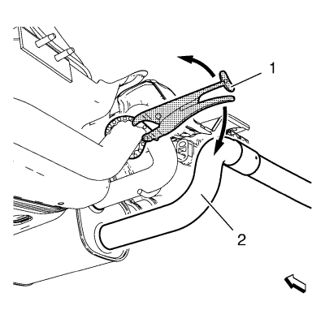
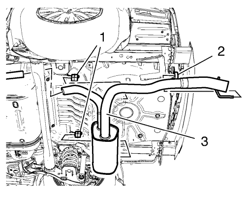
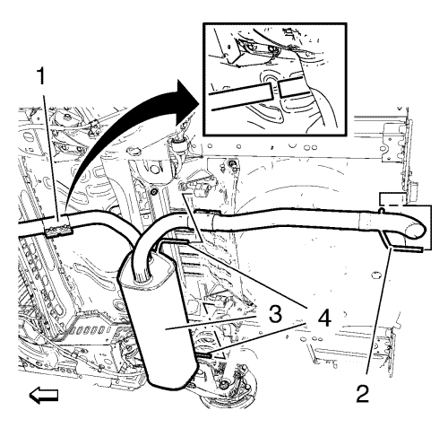

Sustitución del sistema de escape — 2.0L Diésel LLW
Herramientas especiales
CH-6614 Cortatubos de cadena
Si desea informarse sobre herramientas regionales equivalentes, consultar Herramientas especiales .
Procedimiento de desmontaje
Advertencia: Consulte Advertencia de servicio del sistema de escape en la sección Prólogo.
Advertencia: Consulte Advertencia sobre guantes y gafas protectoras en la sección Prólogo.
- Elevar el vehículo y soportarlo de manera segura. Consultar Elevación y soporte en alto del vehículo .

- Corte el silenciador trasero de escape (2) con el cortatubos CH-6614 (1).

- Desmonte el silenciador trasero de escape (3) del aislante de su soporte de suspensión (1, 2).
- Desmonte el tubo flexible de escape delantero. Consultar Sustitución del tubo flexible de escape → 2.0L Diésel LLW .
- Desmonte el filtro de partículas de escape. Consultar Sustitución del filtro de partículas del escape → 2.0L Diésel LNP → 1.7L Diesel LPL y LPV → 2.0L Diésel LLW .
- Desmonte todos los aislantes de soportes de suspensión del tubo de escape y los bajos.
Procedimiento de montaje
- Monte todos los aislantes de soportes de suspensión en el tubo de escape y los bajos.
- Monte el filtro de partículas de escape. Consultar Sustitución del filtro de partículas del escape → 2.0L Diésel LNP → 1.7L Diesel LPL y LPV → 2.0L Diésel LLW .
- Monte el tubo flexible de escape. Consultar Sustitución del tubo flexible de escape → 2.0L Diésel LLW .

- Monte el silenciador trasero de escape (3) en el aislante de su soporte de suspensión (2, 4).
Precaución:Consulte Precaución con las fijaciones en la sección Prólogo.
- Monte las abrazaderas de tubo de escape (1) y apriételas a 20 N·m (15 lib. pie).
| © Copyright Chevrolet. All rights reserved |